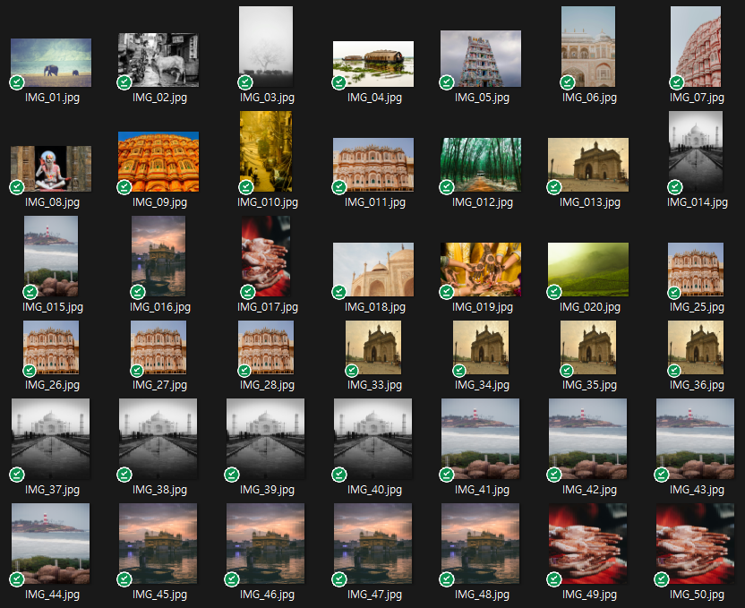

Starting from the Challenge

2026-india-trip.7z contains 42 travel photographs. I compared their metadata fields to find anything that appeared in only one image.
1. Finding the one unusual ImageDescription
JPEG files can store camera information and text descriptions in EXIF. After extracting the archive, I listed the ImageDescription field from every image:
7z x 2026-india-trip.7z
exiftool -r -ImageDescription 2026-india-trip
Most entries contain ordinary travel captions. IMG_38.jpg is the only one whose description is a URL:
https://ctf.pir4cy.com/exif-flag
2. Opening the URL and decoding its value
Opening the page shows a Base64 string:
SW5JdHtoMWQxbmdfMW5fbTN0YWQ0dDR9Cg==
python -c "import base64; print(base64.b64decode('SW5JdHtoMWQxbmdfMW5fbTN0YWQ0dDR9Cg==').decode().strip())"
The command prints the flag directly.
Final Flag
InIt{h1d1ng_1n_m3tad4t4}
Summary
- Archive: Extract the 42 photographs.
- Metadata:
IMG_38.jpgis the only image whoseImageDescriptionis a URL. - Page: Open that URL and Base64-decode the displayed value.
TACTICAL FLOW MAP
- 2026-india-trip.7z
- Extract archive
- Compare 42 ImageDescription fields
- IMG_38.jpg → URL
- Open page
- Base64 decode → flag
// END OF WRITE UP← Misc write ups